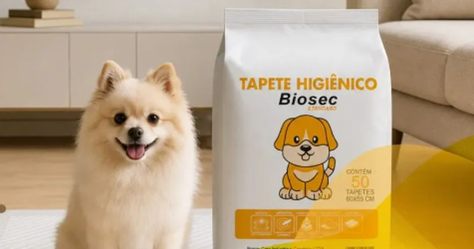
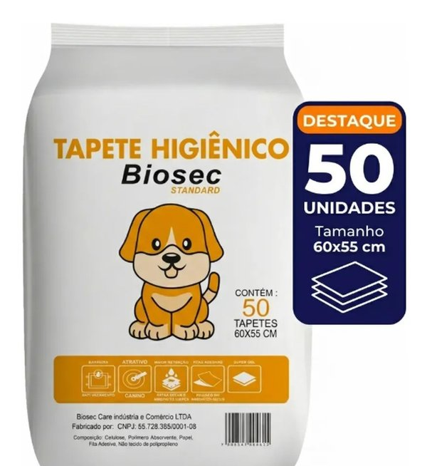

Este post contém links de afiliado. Podemos receber uma comissão em compras feitas através deles, sem custo adicional para você.
Escolher o tapete higiênico certo para o seu cachorro envolve três critérios principais: o tamanho em relação ao porte do animal, o tipo de absorção (com ou sem gel) e o número de camadas, que determina quanto líquido o tapete retém sem vazar ou encharcar o chão. Um tapete subdimensionado ou sem gel absorvente tende a vazar nas bordas e desencoraja o cão a repetir o uso, especialmente em filhotes ainda em fase de adestramento.
Este guia reúne os critérios técnicos que mais diferenciam um tapete higiênico de outro, com foco no Tapete Higiênico Biosec Standard — um modelo de 50 unidades, 60x55cm, com gel absorvente, fitas adesivas e barreiras laterais — para ilustrar o que procurar na hora de comprar.
Key Takeaways
- O gel absorvente usa cristais de poliacrilato de sódio que retêm líquido e mantêm a superfície seca ao toque, diferente de tapetes só de celulose, que encharcam mais rápido.
- O tamanho deve seguir o porte do cão: P (até 10kg), M (10-25kg) e G (até 35kg) — o Biosec Standard, em 60x55cm, cobre bem portes pequenos e médios.
- O ideal é trocar o tapete diariamente em cães adultos, e a cada 8-12 horas em filhotes, para não desestimular o uso.
- Fitas adesivas e barreiras laterais reduzem deslocamento do tapete e vazamento nas bordas, dois dos problemas mais citados por quem usa o produto.
O gel absorvente é composto por cristais de poliacrilato de sódio que, ao entrar em contato com a urina, incham e se transformam em um gel que retém o líquido na estrutura do tapete — essa reação é o que mantém a superfície seca ao toque mesmo depois do uso, ao contrário de tapetes que usam apenas camadas de celulose ou papel, que absorvem mas permanecem úmidos por mais tempo. Tapetes com gel costumam exigir uma quantidade mínima eficiente de cristais por unidade para funcionar bem em um tapete de 60x60cm (My Best Brasil, retrieved 2026-10-04).
O Tapete Higiênico Biosec Standard usa esse sistema de gel combinado com fitas adesivas e barreiras laterais, que ajudam a conter o líquido dentro da área absorvente e evitam que ele escorra para fora do tapete quando o cão se movimenta em cima dele.
O tamanho do tapete deve acompanhar o peso e porte do animal: cães de pequeno porte, até 10kg, costumam ser bem atendidos pelo tamanho P (cerca de 60x45cm); cães de porte médio, entre 10 e 25kg, pedem o tamanho M (80x60cm); e cães de porte grande, até 35kg, usam melhor o tamanho G (100x70cm) (My Best Brasil, retrieved 2026-10-04). O Biosec Standard, com 60x55cm e área de absorção de 50x50cm, fica numa faixa intermediária que atende bem cães pequenos e médios — mas pode ser justo para cães maiores ou que urinam em grande volume de uma vez.
Um ponto prático: tapetes pequenos demais para o porte do cão aumentam a chance de ele pisar fora da área absorvente, especialmente em filhotes que ainda não têm pontaria. Nesses casos, vale optar pelo tamanho acima do recomendado pelo peso atual, considerando o crescimento do filhote.

Tapetes com mais camadas — geralmente entre 5 e 7 — distribuem melhor o líquido pela superfície, evitando que ele se acumule em um único ponto e aumente o risco de vazamento nas bordas (My Best Brasil, retrieved 2026-10-04). Tapetes de camada única costumam ser mais baratos, mas tendem a saturar mais rápido e podem deixar a superfície molhada antes do fim do dia, o que incomoda tanto o cão quanto o tutor na hora da limpeza.
Além das camadas internas, as barreiras laterais elevadas — presentes no Biosec Standard — funcionam como uma segunda linha de contenção: mesmo que o cão urine próximo à borda, a barreira ajuda a direcionar o líquido de volta para a área absorvente em vez de deixá-lo escorrer para o piso.
A recomendação geral é trocar o tapete assim que ele estiver visivelmente saturado, o que para a maioria dos cães adultos significa uma troca por dia. Filhotes urinam com muito mais frequência que cães adultos e costumam precisar de troca a cada 8 a 12 horas, já que fazem necessidades várias vezes ao longo do dia (AZ Pet Shop, retrieved 2026-10-04).
Deixar o tapete sujo por tempo demais é um dos principais motivos de cães passarem a fazer necessidades fora do tapete: o desconforto de pisar em uma superfície já saturada faz o animal evitar aquele local, mesmo que já estivesse adestrado para usá-lo (Petlove, retrieved 2026-10-04).
Para filhotes em fase de adestramento, a recomendação é forrar uma área ampla e de fácil acesso com vários tapetes lado a lado, e ir reduzindo a quantidade gradualmente conforme o filhote aprende a mirar a região certa, até restar apenas um tapete no local definitivo (Cão Cidadão, retrieved 2026-10-04). Trocar o tapete diariamente nessa fase é ainda mais importante, porque um tapete sujo pode fazer o filhote associar o local a desconforto e procurar outro lugar da casa.
As fitas adesivas presentes em modelos como o Biosec Standard ajudam bastante nessa fase: elas fixam o tapete ao piso e evitam que ele amasse, desloque ou vire quando o filhote fareja ou pisa antes de se decidir a usar — um problema comum em pisos lisos como porcelanato ou laminado.
O problema mais citado por quem usa tapete higiênico é a área de absorção menor do que o esperado em relação ao tamanho total do produto — o tapete pode ter 60x55cm de dimensão externa, mas uma área de absorção efetiva de apenas 50x50cm, o que exige atenção ao posicionar o tapete em relação ao local onde o cão costuma urinar. Vale sempre conferir a área de absorção informada na embalagem, não só a medida externa do tapete.
Outro ponto de atenção, relatado por compradores de tapetes com gel em geral, é que colocar papel ou outro material sobre o tapete pode reduzir a eficácia do gel absorvente, já que a reação química depende do contato direto entre o líquido e os cristais. O uso recomendado é sempre direto, sem forros adicionais sobre a superfície.
| Critério | Tapete Higiênico Biosec Standard |
|---|---|
| Quantidade | 50 unidades |
| Dimensão | 60cm x 55cm |
| Área de absorção | 50cm x 50cm |
| Absorção | Gel absorvente (poliacrilato de sódio) |
| Fixação | Fitas adesivas |
| Contenção | Barreiras laterais anti-vazamento |
| Indicado para | Cães de pequeno e médio porte |
Esta análise foi construída a partir da ficha técnica divulgada pelo fabricante e vendedor no Mercado Livre, cruzada com comparativos independentes do setor pet sobre critérios técnicos de tapetes higiênicos (tamanho, camadas, tipo de absorção) e boas práticas de adestramento recomendadas por especialistas do setor. Não realizamos teste laboratorial de capacidade de absorção em litros — os dados de dimensão, composição e quantidade refletem o que consta no anúncio verificado. Recomendamos conferir as avaliações mais recentes de compradores antes de fechar a compra, já que a experiência pode variar conforme o porte e o volume de urina do animal. Veja nossa política editorial e de afiliados para entender como selecionamos e verificamos produtos.
O Tapete Higiênico Biosec Standard é uma opção equilibrada para cães de pequeno e médio porte, combinando gel absorvente, fitas adesivas e barreiras laterais em um pacote de 50 unidades. Para cães de porte grande ou que urinam em grande volume de uma vez, vale considerar um tamanho M ou G de outras linhas, já que a área de absorção de 50x50cm pode ser justa nesses casos. Independente do modelo escolhido, a troca diária (ou a cada 8-12h em filhotes) é o fator que mais influencia se o cão vai continuar usando o tapete de forma consistente.
Escrito pela Equipe Smart Pet Gadgets. Veja nossa política editorial e como verificamos as fontes citadas neste artigo.
🐾 Confira o preço e a disponibilidade atual no Mercado Livre.
Ver no Mercado Livre →Link de afiliado: podemos receber uma comissão por compras feitas através deste link, sem custo adicional para você.
Depende do porte: cães de até 10 kg costumam usar bem o tamanho P (cerca de 60x45cm), cães de 10 a 25 kg ficam melhor atendidos pelo tamanho M (80x60cm), e cães de porte grande, até 35 kg, pedem o tamanho G (100x70cm). O Biosec Standard, por exemplo, vem em 60x55cm, uma medida intermediária que atende bem portes pequenos e médios.
O ideal é trocar assim que o tapete estiver visivelmente saturado, geralmente uma vez por dia em cães adultos. Filhotes urinam com mais frequência e costumam precisar de troca a cada 8-12 horas, já que urinam várias vezes ao longo do dia e um tapete sujo pode levá-los a procurar outro lugar para fazer as necessidades.
O gel é feito de cristais de poliacrilato de sódio que, ao entrar em contato com a urina, se transformam em um gel que retém o líquido e trava a superfície, mantendo-a seca ao toque. Isso evita que o cão pise em líquido parado e reduz o risco de ele evitar o tapete por desconforto, além de ajudar a conter o odor em comparação com tapetes sem gel.
Não são obrigatórias, mas ajudam bastante em cães mais agitados ou filhotes em fase de adestramento: elas fixam o tapete ao piso e evitam que ele se desloque, amasse ou vire quando o cão pisa ou cheira a superfície antes de usar. Em pisos lisos como porcelanato, essa fixação faz diferença real na experiência de uso.
Nildo Alves — curadoria de produtos pet no Smart Pet Gadgets. Testa e pesquisa produtos para cães e gatos, cruzando especificações de fabricante com boas práticas veterinárias e dados de mercado.
Sobre o Smart Pet Gadgets · Contato · Política editorial e de afiliados